Árboles, Grafos.
Created: 2025-02-25 mar 23:00
Árbol se emplean p.e. en lugar de Listas cuando la
cantidad de elementos almacenada es muy grande y el tiempo de
acceso lineal es costoso.Se suelen representar de este modo
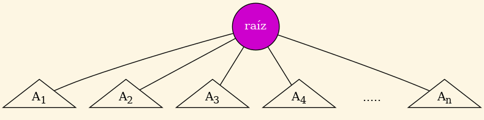
Figura 1: Ejemplo general.
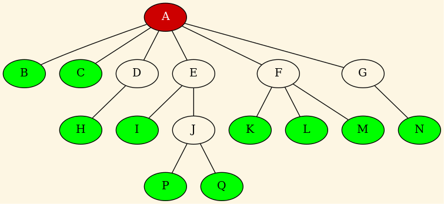
Figura 2: Un árbol concreto.
r es la raíz de un Árbol se dice que cada subárbol es un
hijo de r y que r es el padre de la raíz de cada uno de los
subárboles.Árbol con \(n\) nodos hay \(n-1\) aristas.Árbol hay sólo un camino de la raíz a cada nodo.Árbol es la altura de su raíz.Árbol es la profundidad de la hoja más
profunda, es decir, su altura.Árboles cuyos nodos pueden tener n hijos se denominan
n-arios. El caso particular en el cual ningún nodo tiene más de
dos hijos se denomina Árbol binario.Árbol se llama no
ordenado.a y b son hermanos y a está a la izquierda de b,
entonces todos los descencientes de a están a la izquierda de
b y de todos sus descendientes.Árbol.Árbol A es nulo, entonces la lista vacía es el
listado de los nodos de A en los órdenes previo, simétrico
y posterior.
Sea A un Árbol con raíz \(n\) y subárboles \(A_1, A_2,...,A_k\)
representado de este modo:
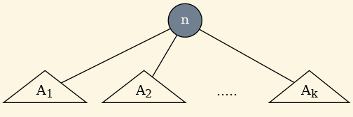
Entonces…
n. Si n es la raíz
(no tiene padre) se devuelve \(\Lambda\). En este caso podemos
interpretar \(\Lambda\) como un nodo nulo que indica que se ha
salido del árbol.n o \(\Lambda\) si n es una hoja (no tiene hijos).n, el cual se define como el nodo m que tiene el mismo padre
p que n, de manera que m está inmediatamente a la derecha de
n en el ordenamiento de los hijos de p. Fíjate que también
puede devolver \(\Lambda\) si es el caso.n.r que tiene etiqueta v y le asigna \(i\) hijos que son las
raíces de los árboles \(A_1, A_2, ..., A_i\), en ese orden desde la
izquierda. Si \(i = 0\) entonces r es la raíz y una hoja.x o null
si el dato no está en el árbol.dato = x.dato = x. Vamos a borrar el nodo 4:
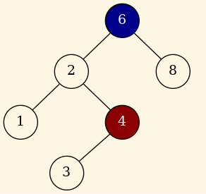
Figura 3: Borrado del nodo 4.
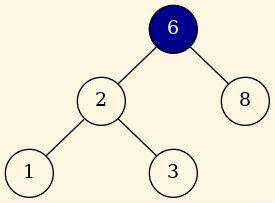
Figura 4: Nodo 4 borrado.
Vamos a borrar el nodo 2 :
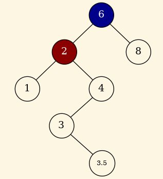
Figura 5: Borrado del nodo 2.
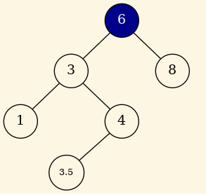
Figura 6: Nodo 2 borrado.
Necesitamos al menos dos clases de Alto Nivel:
typedef char Element; // Hasta que veamos genericidad...
class Tree
{
public:
Tree (void) { fRoot = nullptr; }
~Tree (void);
void insert (const Element &i);
private:
NodePtr fRoot;
};
Y la otra:
class Node
{
public:
Node (Element i) { fItem = i; }
~Nodo (void) {}
Tree& sibling (int n) { return fSiblings[n]; }
Tree& leftSibling (void) { return fSiblings[0]; }
Tree& rightSibling (void) { return fSiblings[1]; }
Element& item (void) { return fItem; }
private:
Element fItem;
Tree fSiblings[2]; // Como máximo 2 hijos
};
Árbol resultado de insertar por este orden: \(8, 5, 9, 4, 1, 6, 2\)
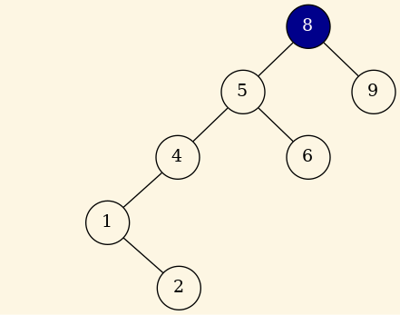
Figura 7: Insertamos 8, 5, 9, 4, 1, 6, 2.
Un vértice \(w\) es adyacente a otro \(v\) \(\iff (v, w) \in
E\).
Aclaración : \((p \iff q) \equiv (p \rightarrow q) \wedge (q \rightarrow p)\).
v. Si no hay ninguno, se devuelve un valor que represente un
vértice nulo.i de entre los
vértices adyacentes a v. Si i es el último índice de los
vertices adyacentes a v se devuelve un valor que represente un
vértice nulo.i está entre
los vértices adyacentes a v.Usaremos grafos dirigidos, los no dirigidos se pueden representar de manera similar.
El siguiente grafo:
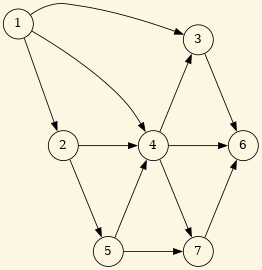
Figura 8: Grafo de partida.
Produce esta lista de adyacencia:
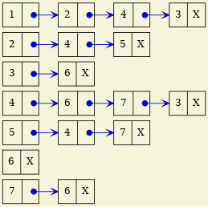
Figura 9: Lista de adyacencia obtenida.
Consiste en visitar sistemáticamente todos los nodos de un grafo.
Consiste en encontrar un árbol de expansión en el grafo. Este se define como: dado un grafo conexo y no-dirigido \(G = (V, E)\), un árbol de expansión es un subconjunto acíclico \(T \subseteq E\) que conecta todos los vértices de \(G\).
Si el grafo es ponderado este problema se transforma en encontrar el árbol de expansión mínima.
Asigna un orden lineal a los vértices de un GDA de manera que si existe una arista de \(i \rightarrow j\), entonces \(i\) aparece antes que \(j\) en el ordenamiento lineal.
Algoritmo:
int[] topologicalOrder (Graph g) {
for cont = 0..|V|-1 {
v = vertInDegree0(); // Nuevo vertice grado entrada == 0
if (v < 0) error ("ciclo");
else {
num_top[v] = cont; // Vertice 'v' ocupa la posicion 'cont' en el orden topologico
for w adjacent to v // Eliminamos 'v' del grafo.
--inDegree[w];
}
}
return num_top;
}
Algoritmo:1
// Asume que no hay etiquetas negativas asociadas a ninguna arista
void Dijkstra(Graph G, vector<Weight>& D) { // Comenzamos en 1 el indice en vectores y matrices
S = {1}; // Nodo 1 guardado en conjunto S
for i = 2 .. n
D[i] = C[1][i]; // Inicializamos D con el coste de ir de 1..i
for i = 1 .. n-1 {
-seleccionamos w en V-S tal que D[w] es un minimo;
-añadimos w a S;
foreach vertex v en V-S
D[v] = min(D[v], D[w] + C[w][v]); // C[w][v] == INFTY si no existe w->v
}
}
Si aplicamos Dijkstra a este grafo:
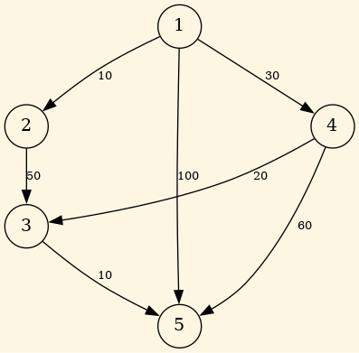
Figura 10: Dijkstra.
| Iteración | S | w | D[2] |
D[3] |
D[4] |
D[5] |
|---|---|---|---|---|---|---|
| Inicial | {1} | - | 10 | \(\infty\) | 30 | 100 |
| 1 | {1,2} | 2 | 10 | 60 | 30 | 100 |
| 2 | {1,2,4} | 4 | 10 | 50 | 30 | 90 |
| 3 | {1,2,4,3} | 3 | 10 | 50 | 30 | 60 |
| 4 | {1,2,4,3,5} | 5 | 10 | 50 | 30 | 60 |
Algoritmo: La entrada al agoritmo la constituyen el grafo \(G\) y la salida se devuelve en T que es un conjunto de aristas.
void Prim (Graph G, set<Edge>& T) {
set<Vertex> U;
Vertex u, v;
T = {};
U = {1};
while U != V {
(u, v) arista con coste mínimo tal que u esta en U y v en V-U;
T = T + {(u, v)};
U = U + {v};
}
}
Aplicar Prim al siguiente grafo:
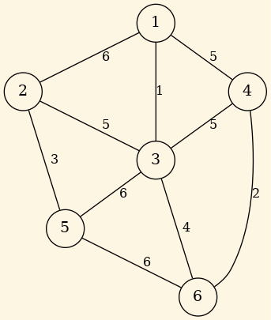
Figura 11: Prim.
Produce en este orden estas aristas: T = { (1,3) , (3,6), (6,4) , (3,2) , (2,5) }
Algoritmo:
void Kruskal (Graph G, set<Edge>& T)
{
T = {};
V; // todos los Arcos del grafo G
Mientras (T contenga menos de n-1 arcos y V != {}) {
De las aristas en E seleccionar la de menor coste (i,j)
V = V - {(i,j)};
Si el nodo-i y el nodo-j no están en el mismo árbol entonces
T = T + {(i,j)}
}
}
Aplicar Kruskal al siguiente grafo:
Figura 12: Kruskal.
Produce en este orden estas aristas: T = { (1,3) , (4,6), (2,5) , (3,6) , (3,2) }
bool visited[N]; // N = numero de nodos del grafo
for i = 0..N-1
visited[i] = false;
for i = 0..N-1
if not visited[i]
dfs (i);
void dfs (Vertex v) {
Vertex w;
visited[v] = true;
for w in L[v] // Para todo nodo w adyacente a v
if not visited[w]
dfs (w);
}